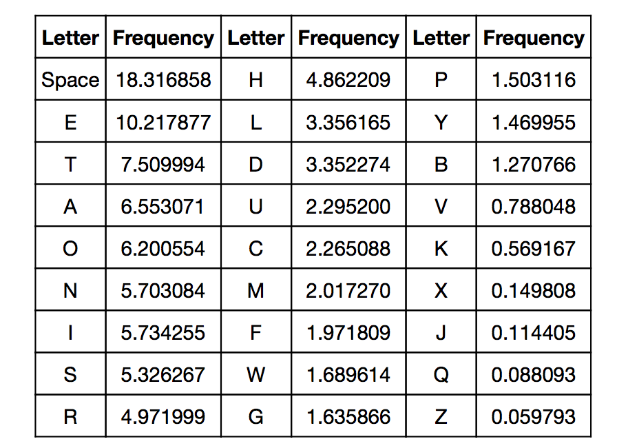
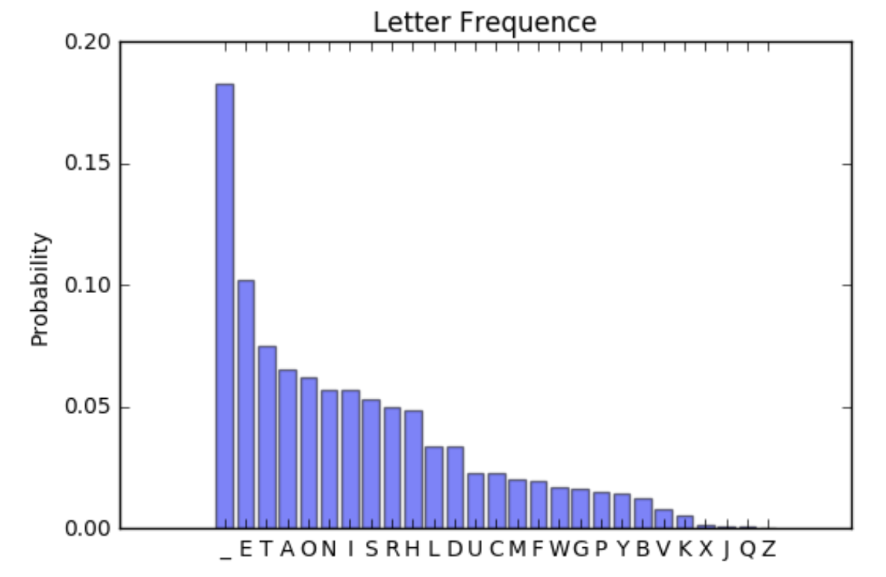

## motivation
### binary model systems
An element of the system can be any site capable of two states, labeled as yes or no, red of blue, occupied or unoccupied.
State of magnets
$\uparrow \downarrow \downarrow \downarrow \uparrow \uparrow \downarrow \uparrow \downarrow ...$
State of binary bit flow
$01010000111000...$
Question: Can digital data be treated with statistical mechanics?
Claude Elwood Shannon was an American mathematician, electrical engineer, and cryptographer known as "the father of information theory". Shannon Entropy was introduced in a landmark paper, *A mathematical Theory of Communication*, published in 1948. Shannon is noted for having founded information theory.
Wikipedia:
Claude Shannon.
Image:
The New Yorker.

Entropy in Statistical Thermodynamics
Boltzmann entropy formula
$\sigma=log\ g$
In Boltzmann's definition, entropy is a measure of the number of possible microstates of a system in **thermodynamic equilibrium**.
Gibbs entropy formula
$ s = - \sum_{i}^{} p_i \ log\ p_i $
A general form, used to identify the entropy of a system. The microstates of such a thermodynamic system are **not equally probable**.
In equilibrium, all microstates are equally likely, so we obtain with
$ p_i = \frac{1}{g}$
\begin{align}
s & = - \sum_{1}^{g} \frac{1}{g} log\ \frac{1}{g} =-log\ \frac{1}{g} \\\\
& =\sigma
\end{align}
$H=- \sum_{i}^{} p_i \ log_b \ p_i$
If $b=2$, the unit of entropy is bit.
- Experiment 1 with a fair coin
- Number of possible events: N = 2
- Probability of obtaining heads:
$p_1=50\%$
- Probability of obtaining tails:
$p_2=50\%$
- Shannon Entropy
$H=-p_1 log_2 p_1-p_2 log_2 p_2=1(bit)$
- Experiment 2 with a double headed coin
- Number of possible events: N = 1
- Probability of obtaining heads:
$p_1=100\%$
- Shannon Entropy
$H=-p_1 log_2 p_1=0 (bits)$
After throwing a fair coin...
We have obtained 1 bit of information.
Or, uncertaintity has reduced by 1 bit.
While, aftering throwing a double headed coin...
We gained nothing.
Shannon Entropy quantifies information!

Shannon Entropy can measure how much information is produced on the average for each letter of a text in the natural language.
Findings:
1. For 27 characters (space included) with equal probability
* $H=4.75 \ (bits\ per\ character)$
* Maximum of information gained per character, theoretically
2. For 27 characters (space included) with different letter frequency
* $H=4.09 \ (bits\ per\ character)$
* neglect written conventions such as prefix, surfix (un-,in-,-ed,-tion)
Data: [Letter Distribution](http://www.macfreek.nl/memory/Letter_Distribution)


In consideriation of probability unbalance and written convention
* $H=0.6 \sim 1.3 \ (bits\ per\ character)$
* Experimentally, based on the ability of human subjects to guess successive characters in text
Imformation Redundancy: Language may not be efficient enough.
To make it more effective:
1. Finding more efficient encoding method
2. Data compression


Maxwell's Demon
Maxwell's demon is a thought experiment created by James Clerk Maxwell. A demon controls a small door between two chambers of gas.
As individual gas molecules approach the door, the demon quickly opens and shuts the door so that fast molecules pass into the other chamber, while slow molecules remain in the first chamber.
Because faster molecules are hotter, the demon's behavior causes one chamber to warm up as the other cools, thus decreasing entropy and violating the Second Law of Thermodynamics.
Wikipedia: [Maxwell's demon](https://en.wikipedia.org/wiki/Maxwell%27s_demon)

INFORMATION NOT FREE
To deterine whether to let a molecule through, the demon must:
1. acquire information
2. discard or store
3. erase (thermodynamically irreversible)
The measurement process comsumes energy, also increases entropy.
Furthermore, **Landauer's principle** quantifies the entropy increase and release of heat due to manipulation of information.
But that's another story...
### Reference
[1]. A mathematical Theory of Communication, C.E. Shannon.
[2]. Prediction and Entropy of Printed English, C.E. Shannon.
[3]. Entropy(information theory), Wikipedia.
[4]. Entropy (statistical thermodynamics), Wikipedia.
[5]. Maxwell's demon, wikipedia.
[6]. Landauer's principle, wikipedia.
[7]. [Entropy and Redundancy in English](http://people.seas.harvard.edu/~jones/cscie129/papers/stanford_info_paper/entropy_of_english_9.htm).
[8]. Information Theory, Claude Shannon, Entropy, Redundancy, Data Compression & Bits, [YouTube](https://www.youtube.com/watch?v=JnJq3Py0dyM&t=434s).
[9]. [Letter Distribution](http://www.macfreek.nl/memory/Letter_Distribution).
### Acknowledgement
Online presentation based on [reveal.js](https://github.com/hakimel/reveal.js), an open-source html presentation framework.
Follow me on [Github](https://github.com/ustcllh).